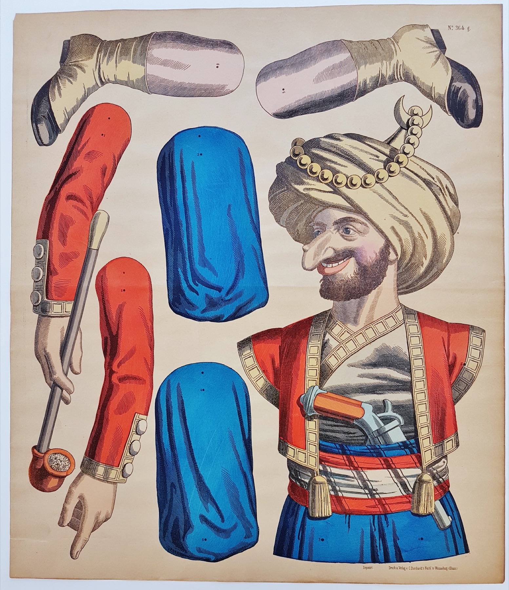
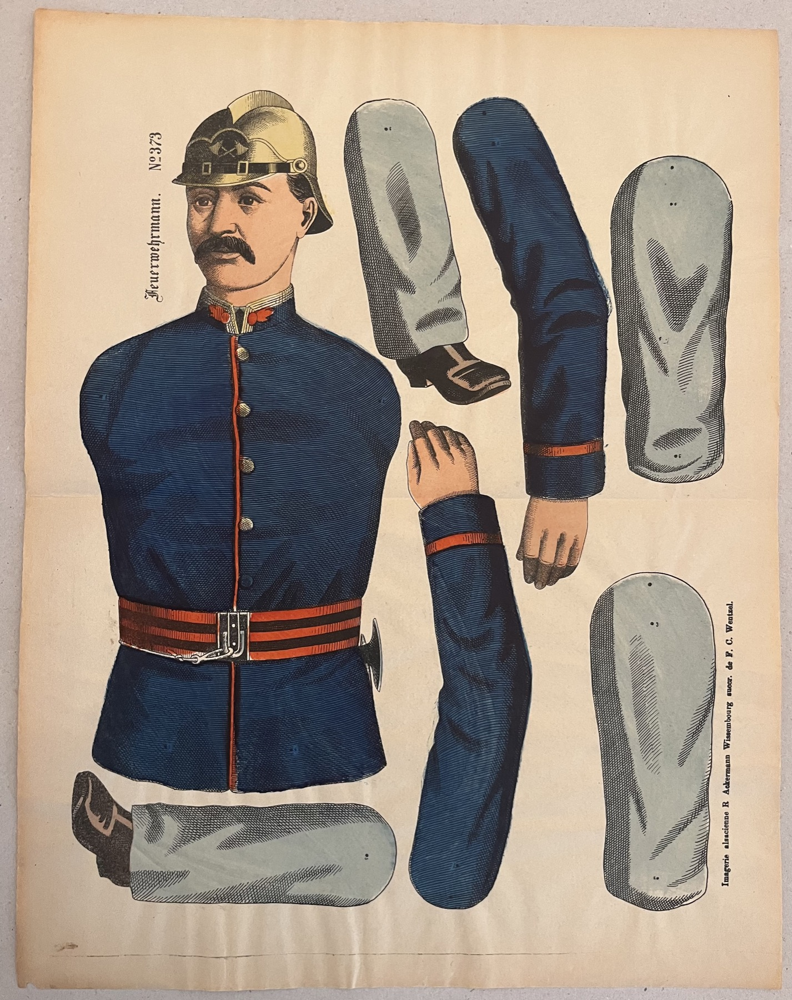
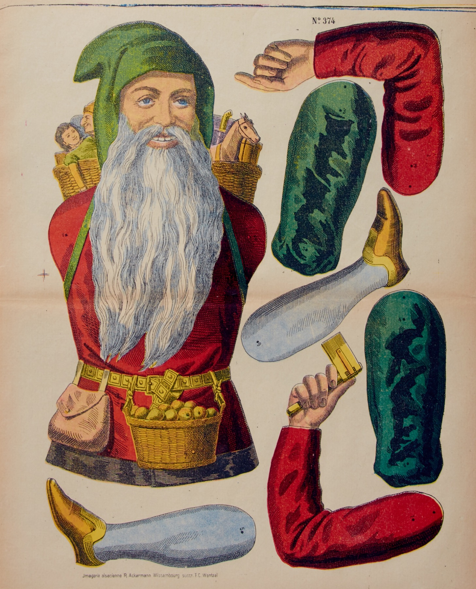

Collection
The Collection at a Glance
The first version of the site is arranged by theme, allowing the figures to be explored as groups of motifs rather than as individual catalogue entries.

Warriors
Soldiers, legionaries and martial figures. Example: Turkish Street Robber.

Historical Figures
Figures drawn from literature and the historical imagination. Example: Don Quixote.

Character Types
Comic and eccentric personalities. Example: Man with Umbrella.

National and Regional Types
Figures framed as national or regional identities. Example: Russian Figure.

Professions
Trades and working identities. Example: Fireman.

Harlequins
Stage figures and acrobatic characters. Example: Harlequin.

Father Christmas
Festive seasonal figures. Example: Hans Rapp.